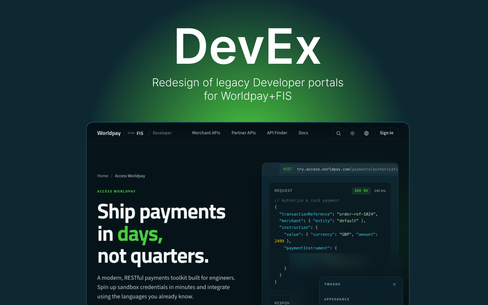
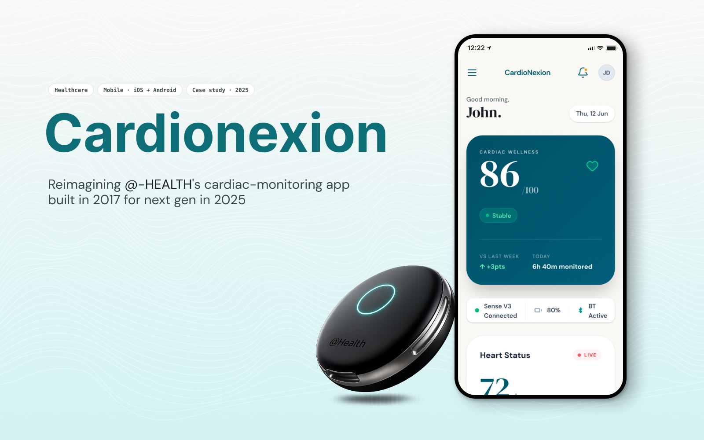
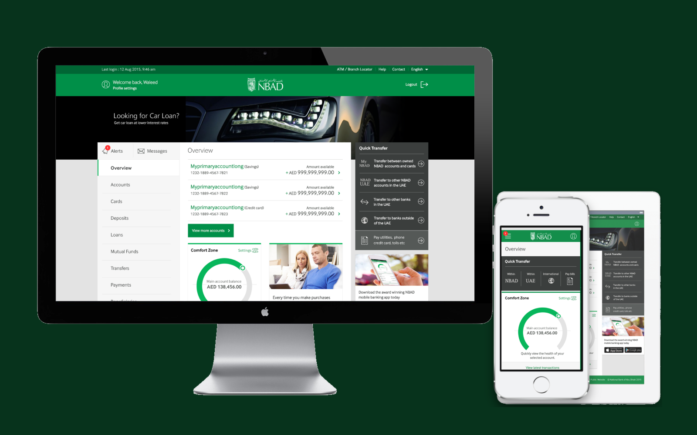
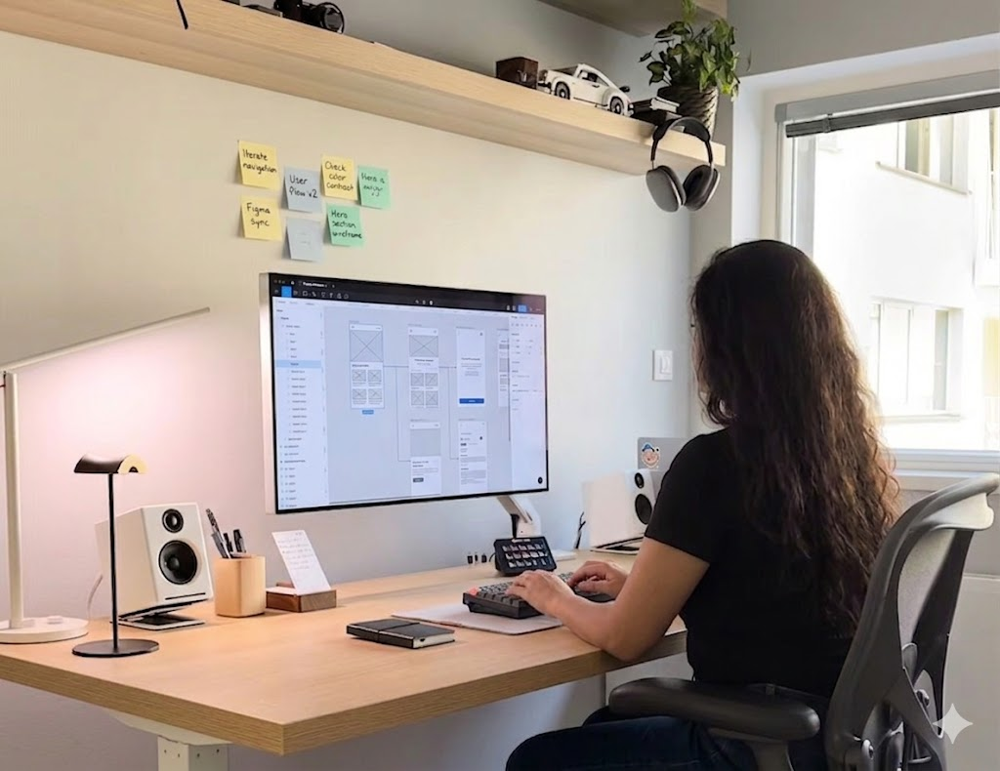

Hi, I'm Niyati, a Senior Product Designer in London — I make complicated products feel obvious.
Six years designing Worldpay's payment products, and most of a career before that in banking, commerce and enterprise software. I work end to end — research and UX through interface, visual design and the systems underneath.
Where I've worked, in order
- IndiaNICAhmedabad · 2007
- CapgeminiPune · 2014
- MobiliyaPune · 2016
- Worldpay / FISLondon · 2018
Along the way: storefronts for Yahoo, banking for the National Bank of Abu Dhabi.
See the full experienceThree projects, with the thinking left in.
Not a thumbnail gallery. Three long-form case studies — and in the FIS one, five prototype screens built in real HTML that you can click through.

The project I spent longest on, and learned the most from.

I worked on the 2017 original. This is what I'd do with it now.
Designing for rooftops, bad light and no signal.

A historical project — no longer live.
Short projects & proofs of concept
Smaller explorations — a few days to a few weeks each.
An end-to-end product toolkit.
I move between strategy, UX, interaction, visual design and systems — which is usually what these problems need.
Practice
Toolkit
Drag them around.

I'm most useful before the problem is tidy.
I'm Niyati, a designer in London. I started as an HTML developer building Yahoo storefronts, moved into visual design, then UX, then the systems underneath — which means I can usually see where a product is going wrong at any of those layers.
The work I care about is the unglamorous kind: a developer portal nobody could navigate, a banking flow with twelve screens where three would do. Payments and healthcare taught me that clarity is not a style choice — it's the whole job.
I'm looking for my next role.
Open to Senior Product Designer roles in London, hybrid or remote. If you're hiring — or you've got a product that's become hard to use and you want a second opinion — send me a note.
It's — in London right now. I read every email myself.